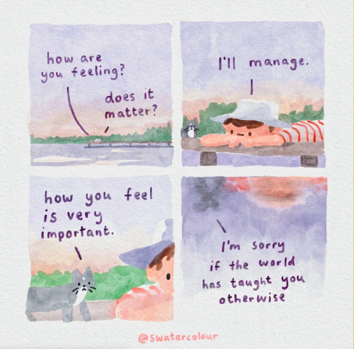

Suicide is the second leading cause of death for individuals age 10-24. During an individual's teenage years, they go through many mental and emotional changes as they transition into adulthood.
These changes can be difficult to understand and may lead to mental health challenges that increase their risk of suicide. In a study conducted by Eaton et al., 1 in every 15 teens reported attempting suicide every year.
It is often believed that youths who say they are suicidal and talk about self-harm "want attention." However, if a youth reaches out about their suicidal thoughts, it is imperative to take them seriously and trust them. It is important not to invalidate or undermine an individual's struggles because of their age.
While a breakup or bad test grade may not seem like a big problem, it can be to the person experiencing it. Thus, it's important to empathize with the individual and listen to their struggles and thoughts.
Do not promise to keep their struggles a secret. While it may seem like you are "breaking their trust," you are actually helping them by reaching out to an adult. They will be able to help the suicidal individual or direct you to someone who can.